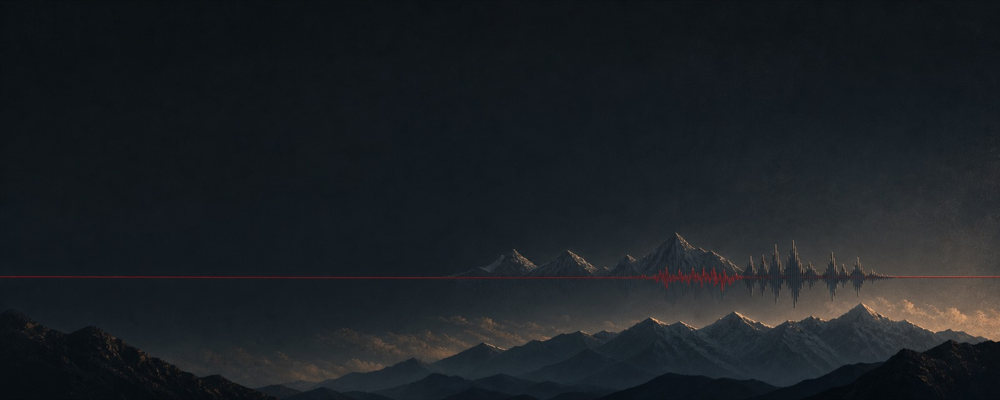
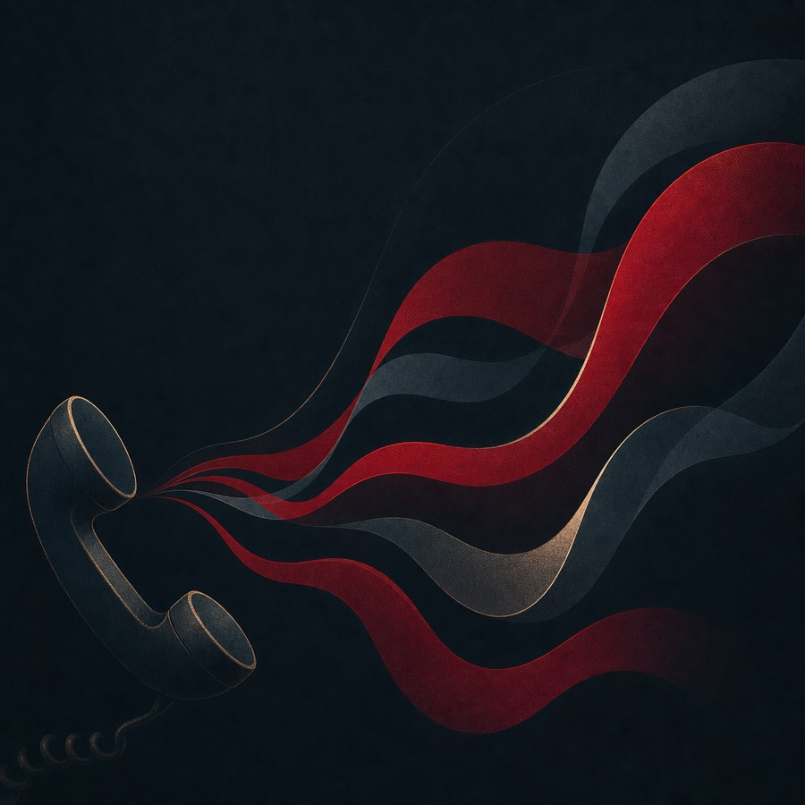
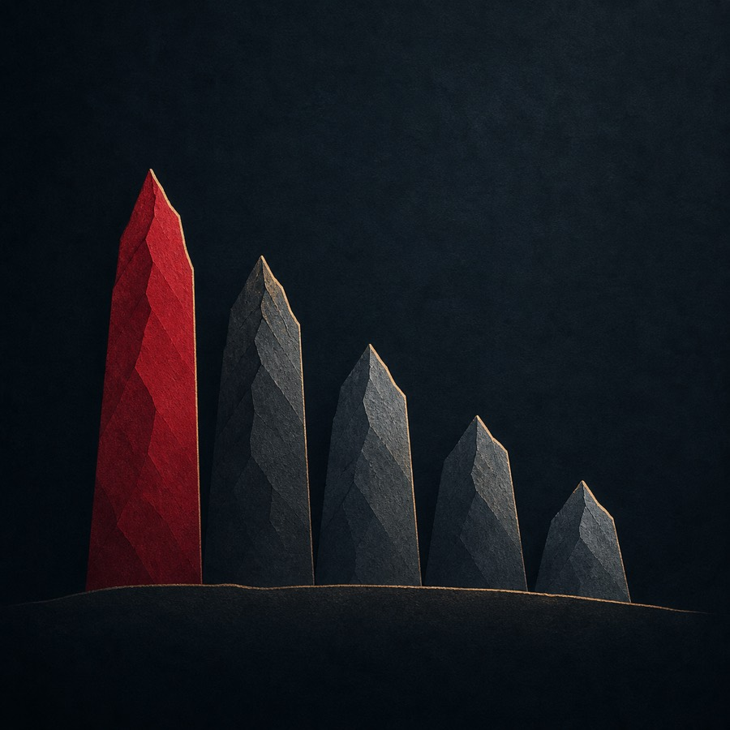

Trained on 1,655 hours of conversational Nepali. Benchmarked on real call audio — where everything else falls apart.
Roughly 33 million people speak Nepali, and nearly all speech technology for it is built and scored on read-aloud recordings. Real Nepali — spontaneous, conversational, code-switched, on noisy 8 kHz lines — is acoustically a different language. The largest multilingual model in the world, Whisper-large-v3, scores ~99% word error rate on real Nepali calls: it drifts into Hindi spelling and hallucination loops. Until now there was no public way to even see this. NepaliConformer is trained on conversation, and NepTel — our benchmark of genuine Nepali call-center audio with human-reviewed references — measures what actually survives contact with reality.

75 segments · 2,375 words of real Nepali customer-support calls, references drafted by Google Chirp 2 and reviewed word-by-segment by a native speaker. Per-system outputs are published, so every number below can be re-derived.

| system | params | WER ↓ | |
|---|---|---|---|
| NepaliConformer offline (ours) | 121M | 33.8 | |
| Kriti — Naamche Labs | 119M | 40.6 | |
| NepaliConformer streaming (ours, 520 ms) | 121M | 59.9 | |
| MMS-1B — Meta, zero-shot | 965M | 81.0 | |
| IndicWav2Vec — community mirror | 94M | 86.6 | |
| Whisper-large-v3 — zero-shot, tuned | 809M | 99.4 |
NepTel is our benchmark — that authorship, the full reference protocol, review statistics, and every known bias are documented in the provenance. Margin over Kriti: +6.8 WER points, 95% CI [+3.8, +9.9], paired bootstrap. Have a Nepali ASR system? Run the scorer and open a PR — we would love to be beaten.
Full-context decoding. The strongest system we measured on real Nepali speech. Use this unless you need word-by-word streaming.
Hugging Face →Cache-aware incremental decoding with 520 ms lookahead, for live agents. Carries a large measured penalty we're actively working down — documented, not hidden.
Hugging Face →Microphone or file upload — runs the offline model on a free CPU, so give a 30-second clip ten to twenty seconds.
Every hole below was found by measurement and ships with the release — because a benchmark you can't trust is worse than none.
Full numbers, instruments and confidence intervals: RESULTS.md.